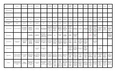

OKOrganik kimyo birikmalari va ularning xossalarini o'z ichiga olgan qisqacha jadval.
Ushbu jadval organik kimyoning asosiy sinflari, ularning funksional guruhlari, izomeriya turlari va fizik-kimyoviy xossalarini qamrab olgan qisqacha ma'lumotnomadir. Unda alkanlar, alkenlar, spirtlar, aldegidlar va boshqa organik birikmalarning o'ziga xos xususiyatlari hamda qo'llanilish sohalari tizimlashtirilgan.